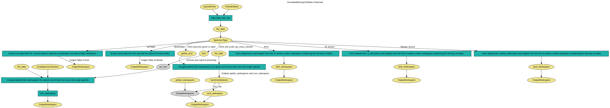

\(\renewcommand\AA{\unicode{x212B}}\)
SimulatedDensityOfStates v1¶
{kind=link}
SimulatedDensityOfStates dialog.¶
Summary¶
Calculates phonon densities of states, Raman and IR spectrum.
Properties¶
Name |
Direction |
Type |
Default |
Description |
|---|---|---|---|---|
CASTEPFile |
Input |
string |
Filename of the CASTEP file. Allowed values: [‘castep’] |
|
PHONONFile |
Input |
string |
Filename of the PHONON file. Allowed values: [‘phonon’] |
|
ForceConstantsFile |
Input |
string |
Allowed extensions: [‘.castep_bin’, ‘.json’, ‘.yaml’] |
|
ForceConstantsSampling |
Input |
number |
20 |
Real-space cutoff in Angstrom for Brillouin zone sampling. |
Function |
Input |
string |
Gaussian |
Type of function to fit to peaks. Allowed values: [‘Gaussian’, ‘Lorentzian’] |
PeakWidth |
Input |
string |
10.0 |
Set Gaussian/Lorentzian FWHM for broadening. Default is 10 |
SpectrumType |
Input |
string |
DOS |
Type of intensities to extract and model (fundamentals-only) from .phonon. Allowed values: [‘IonTable’, ‘DOS’, ‘IR_Active’, ‘Raman_Active’, ‘BondTable’] |
CalculateIonIndices |
Input |
boolean |
False |
Calculates the individual index of all Ions in the simulated data. |
StickHeight |
Input |
number |
0.01 |
Intensity of peaks in stick diagram. |
Scale |
Input |
number |
1 |
Scale the intesity by the given factor. Default is no scaling. |
BinWidth |
Input |
number |
1 |
Set histogram resolution for binning (eV or cm**-1). Default is 1 |
Temperature |
Input |
number |
300 |
Temperature to use (in raman spectrum modelling). Default is 300 |
ZeroThreshold |
Input |
number |
3 |
Ignore frequencies below the this threshold. Default is 3.0 |
Ions |
Input |
str list |
List of Ions to use to calculate partial density of states.If left blank, total density of states will be calculated |
|
SumContributions |
Input |
boolean |
False |
Sum the partial density of states into a single workspace. |
ScaleByCrossSection |
Input |
string |
None |
Sum the partial density of states by the scattering cross section. Allowed values: [‘None’, ‘Total’, ‘Incoherent’, ‘Coherent’] |
OutputWorkspace |
Output |
Mandatory |
Name to give the output workspace. |
Description¶
Calculates phonon densities of states, Raman and IR spectrum from the output of CASTEP code obtained in the form of .phonon and .castep files.
The PeakWidth property may be passed a function containing the variable “energy” (e.g. 0.1*energy) to set the FWHM of the peak as a function of the energy (centre point of the peak). This can be useful for comparison with experimental data by allowing the peak width to change according to the resolution of the instrument.
If the IonTable spectrum type is used then the output workspace will be a table workspace containing each ion that is present in a .phonon file.
If the BondTable spectrum type is used then the output workspace will be a table workspace containing details of the bonds defined in the .castep file.
Workflow¶
Usage¶
Note
To run these usage examples please first download the usage data, and add these to your path. In Mantid this is done using Manage User Directories.
Example - loading data from phonon & castep files:
# Loading the same data from a castep and phonon file
phonon_ws = SimulatedDensityOfStates(PHONONFile='squaricn.phonon')
castep_ws = SimulatedDensityOfStates(CASTEPFile='squaricn.castep')
result = CompareWorkspaces(phonon_ws, castep_ws)
print(result[0])
Output:
True
Example - loading partial contributions of ions:
squaricn = SimulatedDensityOfStates(PHONONFile='squaricn.phonon',
Ions=['H', 'C', 'O'])
for name in squaricn.getNames():
print(name)
Output:
squaricn_H
squaricn_C
squaricn_O
Example - loading summed partial contributions of ions:
sum_ws = SimulatedDensityOfStates(PHONONFile='squaricn.phonon',
Ions=['H', 'C', 'O'],
SumContributions=True)
total_ws = SimulatedDensityOfStates(PHONONFile='squaricn.phonon')
print(CompareWorkspaces(total_ws, sum_ws, Tolerance=1e-12)[0])
Output:
True
Example - Getting the list of ions in a phonon file:
ion_ws = SimulatedDensityOfStates(PHONONFile='squaricn.phonon',
SpectrumType='IonTable')
print(', '.join(ion_ws.column('Species')))
Output:
H, H, H, H, C, C, C, C, C, C, C, C, O, O, O, O, O, O, O, O
Categories: AlgorithmIndex | Simulation
Source¶
Python: SimulatedDensityOfStates.py